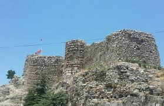
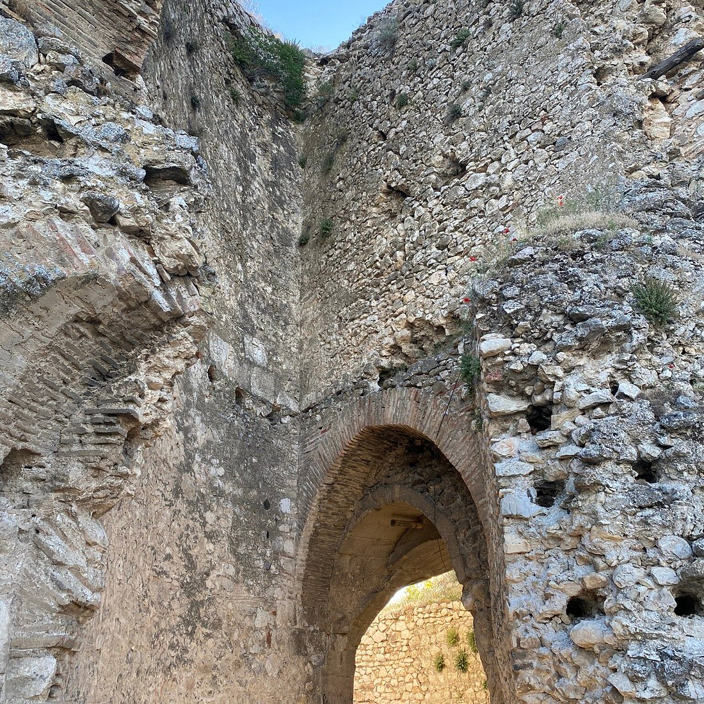
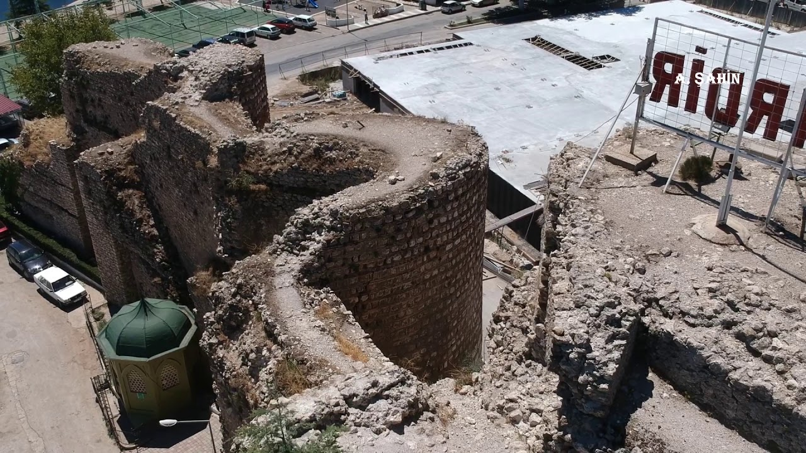

Eğirdir Kalesi
Eğirdir şehir merkezinde yer alan kalenin ilk inşaasının Lidyalılar dönemine kadar indiği iddia edilmektedir ancak bunu kanıtlayan herhangi bir kalıntı bulunmamaktadır. Hükümet Meydanı’nın doğu kanadında ve kuzey-güney yönünde uzanan burçlar ve sur duvarlarından ibaret bir kalıntı halinde günümüze ulaşabilen kalenin inşa tekniklerine göre, Orta-Bizans Çağı’na ait olduğu ve sonrasında kentin Türklerin eline geçmesi ile çeşitli fiziksel müdahaleler ile günümüzdeki görünümünü kazandığı tahmin edilmektedir. Eğirdir’de iç kale ve dış kale olmak üzere iki kale kalıntısı bulunmaktadır. Hala kalıntıları ayakta olan iç kale yarımadanın uç kısmına inşa edilmiştir. Dış kale kalıntıları ise sur içinde yer yer bulunmaktadır. Kalenin kente bakan yüzündeki kalıntılar daha iyi durumda olmasına karşın diğer kısımdaki taşlar zamanla halk tarafından sökülerek çeşitli yapılarda kullanılmıştır. Çeşitli zamanlarda onarılan kale surları bir sıra tuğla ve taş olarak inşa edilmiştir. Moğolların Eğirdir’i istilası sonucunda zarar görmüş ve Hamidoğulları ve Osmanlılar zamanında tamir edilmiştir. Kentin coğrafi konumu nedeniyle, Osmanlı döneminde savunma gereksinimi ortadan kalkınca kale onarılmamış ve giderek harap hâle gelmiştir. Kale giriş kapısının aslında üç kapı olduğu ve günümüzdeki kapının da orta kapı olduğu ifade edilmektedir. İlk giriş kapısının izleri kalede yer yer görülmektedir. Kalenin güney kısmının son ucuna Gavur Mezarlığı denmektedir. Ayrıca, Eğirdir Kalesi Osmanlı döneminde bir ambar olarak kullanılmıştır. Kanunnamelerde kaleye öşür getirildiğinden söz edilmektedir. Günümüzde Eğirdir Kalesi birinci derece arkeolojik sit alanıdır.


